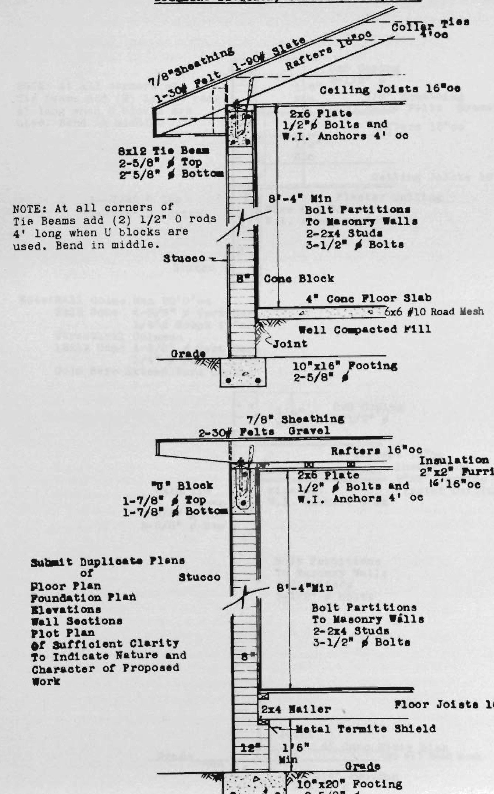

area greater than four hundred (400) square feet shall be erected, or constructed in, or moved into Fire Zone No. 1.
(c) Any building or structure in Fire Zone No. 1 which is enlarged, altered, raised or built upon to an extent exceeding an expenditure of twenty (20) per cent of the value of such building, shall be made to completely comply with the requirements of a new building in such Fire Zone. However, when a building requires repairs to existing wood shingle roofing in Fire Zone No. 1 such repairs shall be limited to ten (10) per cent of the roofing area and when more than ten (10) per cent shall comply with the requirements of new roof coverings in Fire Zone No. 1. New roof covering shall not be placed over existing wood shingles (See Section 104 (e).)
(d) Any building or structure moved into Fire Zone No. 1 shall comply with all the requirements for new buildings in Fire Zone No. 1.
(e) No buildings of Type IV Construction in excess of four hundred (400) square feet in area, nor any building of Type V Construction already erected in Fire Zone No. 1 shall hereafter be altered, raised, enlarged, added to or moved, except as follows:
(1) Such building may be entirely demolished.
(2) Such buildings may be moved entirely outside the limit of Fire Zone No. 1.
(3) Changes, alterations and repairs to the interior of such building or to the front facing a public street may be made, providing that such changes shall not increase in the opinion of the Building Inspector, the fire hazard of such building. Any new building erected on the same lot with an existing frame structure which does not have one wall facing on a public street or alley, shall not be placed within five (5) feet of the existing frame building and an unobstructed passageway of not less than five (5) feet in width and ten (10) feet in height on the street level shall be provided for access from the existing frame building to a public street or alley.
(4) Roofs of such buildings may be covered only with a “Fire Retardant” roof as specified in Section 4305.
(f) Temporary buildings such as reviewing stands and other miscellaneous structures, conforming to the requirements of this Code, and sheds, canopies or fences used for the protection of the public, around and in conjunction with construction work, may be erected in Fire Zone No. 1 by special permit from the Building Inspector for a limited period of time and such structures shall be completely removed upon the expiration of the time limit in such permits.
(g) All doors, windows and other openings in exterior walls of all buildings erected in Fire Zone No. 1 shall be protected by doors or windows of one-hour fire-resistive construction as specified in Section 4304.
EXCEPTIONS: The provisions of paragraph (g) shall not apply to doors, windows or other openings which face directly upon and are not within fifty (50) feet of the opposite side of a public
88
street or other public place, this distance to be measured at right angles to the plane of the wall in which such openings occur.
The provisions of paragraph (g) shall not apply to openings twenty (20) feet or more from buildings on the same property, or twenty (20) feet or more from adjacent property lines other than street fronts, as regulated by first exception; nor shall such provisions apply to openings in courts which are at least twenty (20) feet in their least dimension. For the purpose of this paragraph the adjacent property line may be considered as the opposite of adjoining alleys, streets or other public places if such exist.
(h) All buildings of Type III construction erected in Fire Zone No. 1 shall have all partitions and floors of not less than one-hour fire-resistive construction as specified in Chapter 43.
(i) No Group E buildings except public garages or gasoline filling stations shall be constructed or erected in Fire Zone No. 1 and no existing buildings shall be used or occupied in any manner whatsoever by Group E occupancies, except as public garages or gasoline filling stations, except where permitted by the Zoning Ordinance No. 1156 of the City of Miami and its subsequent amendments.
(j) A building or structure, which is or may be located partly in one Fire Zone and partly in another, shall be considered to be in the more highly restricted Fire Zone when more than one-third of its total floor area is located in such zone.
(k) All buildings in Fire Zone No. 1, irrespective of type of construction or occupancy, shall be covered with a “fire retardant” roof as specified in Section 4305.
Sec. 1603. RESTRICTIONS IN FIRE ZONE NO. 2. (a) Buildings of Type V construction erected or constructed in Fire Zone No. 2 shall have all exterior walls of not less than one-hour fire-resistive construction as specified in Section 4302; provided, that when such exterior walls are less than three (3) feet from adjacent property lines or less than six (6) feet from buildings on the same property, the exterior walls shall be of masonry or reinforced concrete and in both cases the roofs of such buildings shall be covered as specified in paragraph (a) of this Section.
(b) No building of Type IV construction having an area greater than one thousand (1,000) square feet shall be erected or constructed in Fire Zone No. 2.
(c) Any building in Fire Zone No. 2 which is enlarged, altered, raised or built upon to an extent exceeding an expenditure of fifty (50) per cent of the value of such building, shall be made to comply with the requirements of a new building in such fire zone.
(d) Any building or structure moved into Fire Zone No. 2 shall comply with all the requirements for new buildings in Fire Zone No. 2.
(e) No building of Type IV construction in excess of one thousand (1,000) square feet in area, nor any building of Type V construc-
89
tion, except as noted in paragraph (a) of this Section, already erected in Fire Zone No. 2 shall hereafter be altered, raised, enlarged, added to or moved except as follows:
(1) Such buildings may be entirely demolished.
(2) Such building may be moved entirely outside of the limit of Fire Zone No. 2.
(3) Such building may be made to conform to the provisions of paragraph (a) of this Section.
(4) Changes, alterations and repairs to the interior of such building or to the front facing a public street may be made, provided, such changes do not increase the fire hazard of such buildings.
(5) Roofs of such buildings may be covered only with a “Fire Retardant” roof as specified in Section 4305.
(f) Temporary buildings such as reviewing stands and other miscellaneous structures, conforming to the requirements of this Code, and sheds, canopies or fences used for the protection of the public, around and in conjunction with construction work, may be erected in Fire Zone No. 2 by special permit from the Building Inspector for a limited period of time and such structure shall be completely removed upon expiration of the time limit in such permit.
(g) No Group E buildings except public garages or gasoline filling stations shall be constructed or erected in Fire Zone No. 2 and no existing buildings shall be used or occupied in any manner whatsoever by Group E occupancies, except as public garages or gasoline filling stations, except where permitted by the Zoning Ordinance No. 1156 of the City of Miami, and its subsequent amendments.
(h) A building which is partly in Fire Zone No. 2 and partly in Fire Zone No. 3 shall conform to all the restrictions of Fire Zone No. 2 if more than one-third (1/3) of the area of the building is in Fire Zone No. 2.
(i) “Roof covering in all buildings in Fire Zone No. 2 may be of any roofing specified in Section 4305, except as prohibited in paragraph (e-5) above, and except hospitals, schools, theatres or other buildings of like character used for public assembly, shall have a “Fire Retardant” roof as specified in Section 4305.”
Sec. 1604. RESTRICTIONS IN FIRE ZONE NO. 3. Any building complying with the requirements specified in this Code may be erected or moved into or within Fire Zone No. 3.
90
PART V
REQUIREMENTS BASED ON TYPES OF CONSTRUCTION
CHAPTER 17
CLASSIFICATION OF ALL BUILDINGS BY TYPES OF CONSTRUCTION
SEC. 1701. GENERAL. The requirements of Part V are the minimum requirements for the various Types of Construction. In order that a building may be classed in any specific Type of Construction, it is necessary that all of the requirements for that Type of Construction be complied with.
No building or portion thereof shall be required to conform to the details of a Type of Construction higher than that type which meets the minimum requirements based on Occupancy (Part III) or Location in Fire Zone (Part IV) even though certain features of such building actually conform to a higher Type of Construction.
The various Types of Construction herein specified represent varying degrees of public safety and resistance to fire and windstorm. Where specific materials, Types of Construction or fire-resistive protection are required, such requirements shall be the minimum requirements and any materials, Types of Construction or fire-resistive protection which will afford equal or greater public safety or resistance to fire and windstorm as specified in this Code, may be used.
Any system or method of construction to be used shall admit of a rational analysis in accordance with well established principles of mechanics.
Sec. 1702. CLASSIFICATION BY TYPES OF CONSTRUCTION. All buildings for the purpose of this Code shall be divided into the following Types of Construction based upon their resistance to fire, and for the purpose of this Code “Type I” shall be deemed to be the most fire resistive and “Type V” the least fire-resistive Type of Construction.
TYPE I —Fire-Resistive Construction. TYPE II—Heavy Timber Construction. TYPE III—Ordinary Masonry Construction. TYPE IV—Metal Frame Construction. TYPE V —Wood Frame Construction.
When two or more Types of Construction occur in the same building and are not separated by an “Absolute Fire Separation” as specified in Section 503, the entire building shall be classed in the least fire-resistive Type of Construction and such building shall be subject to the restrictions of such type. Any building erected prior to the passage of this Code, which by its construction cannot be definitely classified as Type I, II, III, IV or V as defined herein, shall for the purpose of this Code be deemed to belong to the least fire-resistive class of the two types to which it most nearly conforms.
91
PART V
CHAPTER 18
TYPE I BUILDINGS
(Fire-Resistive)
Sec. 1801. DEFINITIONS. “Type I” or “Type I Buildings.” The structural frame of Type I Buildings shall be of structural steel or iron which shall be fireproofed, or shall be of reinforced concrete. The foundation, exterior walls, inner court walls and walls enclosing vertical openings shall be of masonry or reinforced concrete. The roof construction and floors shall be of fire-resistive materials. Exterior doors and windows, except as specified in Section 1813 shall be of fire-resistive construction.
(Note: Fire-resistive materials and fire-resistive construction have a specific meaning in this Code, as specified in Chapters 42 and 43.)
Sec. 1802. HEIGHT ALLOWABLE. The height of Type I buildings shall not be limited.
Sec. 1803. AREA ALLOWABLE. The floor area of Type I buildings shall not be limited.
Sec. 1804. FOUNDATIONS. Foundation walls and footings shall be of solid masonry as specified in Chapter 29 or of reinforced concrete as specified in Chapters 26 and 29, and shall be designed as specified in Section 2306 and 2802, or steel grillages as specified in Chapter 27. Page 309—Addition
Sec. 1805. EXTERIOR AND INNER COURT WALL. All exterior walls, fire walls and fire division walls shall be of masonry or reinforced concrete as specified in Chapter 29 and shall be of not less than four-hour fire-resistive construction as specified in Section 4302.
Inner court walls shall be of masonry or reinforced concrete of not less than three-hour fire-resistive construction as specified in Section 4302.
Walls fronting on streets having a width of at least fifty (50) feet in Fire Zone No. 1, or thirty (30) feet in Fire Zones No. 2 and 3, may be of incombustible construction with all structural members fire-proofed as required in Section 1809.
Sec. 1806. PARTITIONS. Interior partitions shall be constructed of incombustible materials and shall be of not less than one-hour fire-resistive construction as specified in Section 4302.
Exceptions: Partitions dividing portions of stores, offices or similar places occupied by one tenant only, may be constructed of wood panels or similar light construction up to three-fourths (3/4) the height of the room in which placed; when more than three-fourths (3/4) the height of the room, such partitions shall have not less than the upper one-fourth (1/4) of the partition constructed of glass set in sash.
Sec. 1807. ENCLOSURE OF VERTICAL OPENINGS. En-
92
closures for elevator shafts, vent shafts, stair wells and other vertical openings, when required because of Occupancy in Part III shall be of two-hour fire-resistive construction and all openings therein shall be protected by fire-resistive doors or windows as specified in Chapters 30 and 43.
A parapet wall or hand rail at least thirty (30) inches in height above the roof shall be provided around all open shaft enclosures extending through the roof.
Sec. 1808. STRUCTURAL FRAMEWORK. Structural framework shall be of structural steel or iron as specified in Chapter 27 or shall be of reinforced concrete as specified in Chapter 26.
The structural frame shall be considered as the columns, and all girders, beams, trusses or spandrels having rigid connections to the columns.
The members of floor or roof panels which have no connections to the columns shall be considered secondary members. The structural frame and secondary members shall be designed and constructed to carry all dead, live and other loads to which they may be subjected both during erection and after completion of the structure. Unless otherwise provided for in the structural frame the floor and roof panel construction shall be designed and constructed to carry the horizontal forces to such parts of the structural frame as are designed to carry the horizontal forces to the foundations.
The entire structural frame and each member which is a part of such frame shall be so designed and constructed that the stresses may be satisfactorily determined by a rational analysis in accordance with well established principles of mechanics and sound engineering practice.
Sec. 1809. FIREPROOFING OF STRUCTURAL MEMBERS. (a) All structural steel or iron members, not including forms or structural members for elevators and elevator enclosures, shall be thoroughly fireproofed with not less than four-hour fire-resistive protection for columns, beams and girders and three-hour fire-resistive protection for floors, for all buildings more than eight (8) stories or eighty-five (85’) feet in height; and with three-hour fire-resistive protection for columns, beams and girders and two-hour fire-resistive protection for floors for all buildings which are eight (8) stories or eighty-five (85) feet or less in height; and all such fire-resistive protection shall be as specified in Chapter 43.
EXCEPTIONS:
(1) The thickness of the fireproofing on the outer edge of lugs or brackets on columns may be reduced to not less than one (1) inch.
(2) The masonry over window openings may be supported by a steel plate, angle or similar member which is not fireproofed on the under side, provided the member is supported at proper intervals from a structural beam or girder which is fireproofed on
93
all sides. For openings in masonry bearing walls not exceeding four (4) feet in width, an angle or similar member supported by masonry and not fireproofed on the under side may be used.
(3) Wherever part of the structural steel framework of the roof of a Group A, B or C building is not less than twenty-five (25) feet above any floor or balcony, fireproofing of all members of the roof construction may be omitted.
(4) Where every part of the structural steel framework of the roof of a Group A, B or C building is more than eighteen (18) feet and less than twenty-five (25) feet above any floor or balcony the roof construction shall be protected by a suspended ceiling of not less than one-hour fire-resistive construction as specified in Chapter 43, and such ceiling shall be not less than six (6) inches distant from any part of such roof construction.
(b) All reinforced concrete columns, beams and girders shall be thoroughly fireproofed with four-hour fire-resistive protection and all floors, joists and slabs shall be thoroughly fireproofed with not less than three-hour fire-resistive protection for all buildings more than eight (8) stories or eighty-five (85’) feet in height; and all reinforced concrete columns, beams and girders shall be thoroughly fireproofed with not less than three-hour fire-resistive protection and all floors, joists and slabs shall be thoroughly fireproofed with not less than two-hour fire-resistive protection for all buildings which are eight stories (8) or eighty-five (85’) feet or less in height; and all such fire-resistive protection shall be as specified in Chapter 43.
SEC. 1810. FLOOR CONSTRUCTION. Floors shall be constructed of reinforced concrete, brick or hollow tile arches, reinforced gypsum or may be composite floors of those materials in combination with structural steel or iron or reinforced concrete; or such floor and panel construction shall consist of any floor system providing not less than two-hour fire-resistive construction as specified in Section 4303 for buildings which are eight (8) stories or eighty-five (85) feet or less in height and providing not less than three-hour fire-resistive construction as specified in Section 4303 for all buildings more than eight (8) stories or eighty-five (85) feet in height.
The type of floor construction used shall provide means to keep the beams and girders from spreading, either by installing ties or bridging, with no laterally unsupported length of joists being permitted to exceed eight (8) feet except as otherwise provided in Section 3102 and 3103. The floor and roof panel construction shall be so designed and constructed as to transfer horizontal forces to such parts of the structural frame as are designed to carry the horizontal forces to the foundations.
Where wood sleepers are used for laying wood floors the space between the floor slab and the underside of the wood flooring shall be
94
filled with incombustible material in such a manner that there will be no open spaces under the flooring which will exceed one hundred (100) square feet in area and such space shall be filled solidly under all partitions so that there is no communication under the flooring between adjoining rooms.
Sec. 1811. ROOF CONSTRUCTION. Roofs shall be constructed of any materials or combination of materials as allowed for floors in Section 1810. Roof covering shall be a “Fire-Retardant” roofing as specified in Section 4305.
Any drainage fill placed on a roof deck of any building shall be of an incombustible material and such fill shall be considered as a part of the dead load in designing the roof framing.
Sec. 1812. STAIRS. Stairs and stair platforms shall be constructed of reinforced concrete, iron or steel with treads and risers of concrete, iron or steel. Brick, marble, tile or other incombustible materials may be used for the finish of such treads and risers.
All stairs shall be designed and constructed as specified in Chapter 33 and as specified under Occupancy in Part III.
Sec. 1813. DOORS AND WINDOWS. (a) Doors, windows and other openings in the exterior walls shall be protected by one-hour fire-resistive construction as specified in Chapter 4304.
EXCEPTIONS: (1) The provisions of this Section shall not apply to doors, windows and other openings which face directly upon, and are not within fifty (50) feet in Fire Zones No. 1 or not within thirty (30) feet in Fire Zones No. 2 and 3, of the opposite side of a public street or other public place; this distance to be measured at right angles to the plane of the wall in which such openings occur.
(2) The provisions of paragraph (a) of this Section shall not apply to openings in an outer court twenty (20) feet or more in width parallel to and facing upon a street or public place, provided such openings are not within twenty (20) feet of an adjacent property line.
GUARDS. Except in dwellings, all windows above the third floor line, where window stools are less than three (3) feet above finished floor, shall be provided with approved metal guards up to the three- (3) foot height.
Approved guards shall also be provided for all other openings which do not open on balconies, porches or platforms in accordance with Section 3501.
Sec. 1814. PROJECTIONS FROM THE BUILDING. Bays, oriels and similar projections shall be constructed of incombustible materials with walls, floors and roofs as specified in this Chapter and as specified in Chapter 35.
Porches and exterior balconies shall be constructed of incombustible
95
materials but structural steel or iron members need not be fireproofed; provided, that loading platforms for warehouses, freight depots and similar buildings may be of heavy timber construction with wood floors not less than one and five-eighths (1⅝) inches thick. Such wood construction shall not be carried through the exterior walls of any Type I building.
Cornices, marqueises and similar appendages which are a part of a Type I building shall be constructed of substantial incombustible materials and as specified in Chapter 45.
Sec. 1815. PENTHOUSES AND SKYLIGHTS. Penthouses and other roof structures shall be constructed of masonry or reinforced concrete, and all doors, windows and other openings therein shall be protected by one-hour fire-resistive construction or shall have one-hour fire-resistive windows as specified in Chapters 36 and 43.
Skylights shall be constructed of one-hour fire-resistive materials as specified in Chapter 43 and in Section 3402.
Sec. 1816. COMBUSTIBLE MATERIALS REGULATED. Wood or unprotected steel or iron shall be permitted in the following places:
(1) Mezzanine floors may be of wood or unprotected steel provided that there shall be not more than two such mezzanines in any room of any building and provided, further, that no such mezzanine floor or floors shall cover more than thirty-three and one-third (33 1/3) per cent of the area in the room where located. Such mezzanine floors constructed in Fire Zone No. 1 shall be of heavy timber construction as specified for floor construction in Type II buildings.
(2) Show window frames and aprons, also show cases and other appurtenances on the first floors of stores or other similar buildings shall be constructed as specified in Chapter 34.
(3) Wood may be used if designed for decorative purposes only; also for trim, picture molds, chair-rails, wainscoting, baseboards, hand rails, show window backing, temporary partitions; floors, and sleepers may be of wood. Wood doors may be used except in stair, elevator or other shaft enclosures or where specifically prohibited under Occupancy in Part III.
(4) Roofs may be sheathed by wood planks of two and one-half (2½) inch nominal thickness when such sheathing is more than thirty (30) feet distant from any floor, balcony or gallery and when such plank sheathing is protected on the underside by a ceiling of not less than one-hour fire-resistive construction as specified in Section 4301.
96
PART V
CHAPTER 19
TYPE II BUILDINGS
(Heavy Timber Construction)
Sec. 1901. DEFINITION. “Type II” or Type II Buildings.” The structural frame shall be of structural steel or iron which shall be fire-proofed, of reinforced concrete, of masonry or of heavy timbers, provided, that in buildings not exceeding one story or sixty-five (65) feet in height, the structural steel or iron may have the fireproofing omitted. Foundations and exterior walls shall be of masonry or reinforced concrete. Inner court walls shall be of masonry or reinforced concrete of not less than one-hour fire-resistive construction or of protected solid wood. Roof construction shall be of wood, or incombustible materials. Floors and non-bearing partitions shall be of wood or incombustible materials.
Sec. 1902. HEIGHT ALLOWABLE. Type II buildings shall not exceed a height of seventy-five (75) feet in which height there shall not be more than seven (7) stories; provided that the height of a building erected on sloping ground may not exceed seventy-five (75) feet plus a vertical distance equal to the vertical change in slope along the length of any side of such building, but in no case shall such height exceed eighty-five (85) feet above the adjacent finished ground level; provided, further, that no one-story building shall exceed a height of sixty-five (65) feet.
Towers, spires and steeples erected as a part of the building and not used for habitation or storage may extend not to exceed twenty (20) feet above such height level.
The above allowable heights may be used only when the provisions of Chapter 23 have been complied with.
Sec. 1903. AREA ALLOWABLE. The floor area of a Type II building shall be limited according to Occupancy as specified in Part III of this Code.
Sec. 1904. FOUNDATIONS. Foundation walls and footings shall be of solid masonry as specified in Chapter 29 or of reinforced concrete as specified in Chapters 26 and 29, or steel grillages as specified in Chapter 27, and shall be designed as specified in Sections 2306 and 2802. (See Section 1905 for vents required in solid foundation walls.) See page 309
Sec. 1905. EXTERIOR AND INNER COURT WALLS. All exterior walls, fire walls and fire division walls shall be of masonry or reinforced concrete as specified in Chapter 29 and shall be of not less than four-hour fire-resistive construction as specified in Section 4302.
All walls within five (5) feet of adjacent property lines (excepting property lines abutting a street or alley) and all walls within (10) feet of other buildings on the same property shall be provided with a para-
97
pet wall at least eighteen (18) inches high above the roof at all points, provided that parapet walls need not be constructed on buildings (20) feet or less in height or where the roof slopes more than twenty (20) degrees from the horizontal back from the exterior wall of such building. (See Section 2935.)
Walls fronting on streets having a width of at least fifty (50) feet in Fire Zone No. 1, or at least thirty (30) feet in Fire Zones No. 2 and 3, may be of incombustible construction with all structural members fireproofed as required in Section 1909.
Inner court walls shall be constructed the same as exterior walls or shall be of not less than four-inch solid wood laminated construction protected on the weather side thereof by incombustible fire-resistive materials as provided in Section 4202.
See Section 2901 for reinforced concrete tie-beam and coping requirements.
Solid foundation walls under the first-floor joist of all Type II buildings (except such space as is occupied by a basement or cellar) shall be provided with ventilated openings to insure ample ventilation, and such openings shall be covered with non-corrosive wire mesh of not less than sixteen (16) mesh per lineal inch. Such ventilated openings shall be proportioned on the basis of not less than two (2) square feet for each fifteen (15) lineal feet or major fraction thereof of all exterior foundation walls distributed on not less than three (3) sides to produce adequate cross-ventilation in at least one direction.
Sec. 1906. PARTITIONS. Interior partitions shall be of one-hour fire-resistive construction as specified in Section 4302 or may be of solid wood construction formed of two layers of one-inch nominal matched boards or of two-inch nominal tongued and grooved wood planking or of solid wood laminated construction not less than three and five-eighths (3⅝) inches thick.
Where wood partitions abut or adjoin masonry walls they shall be tied as specified in Section 2507.
Temporary partitions as specified in Section 1806 may be used.
Sec. 1907. ENCLOSURE OF VERTICAL OPENINGS. Enclosures for elevator shafts, vent shafts, stair wells and other vertical openings shall be of two-hour fire-resistive construction as specified in Chapters 30 and 43; provided, that in buildings not more than three (3) stories in height which are completely sprinkled as specified in Chapter 38 such enclosure walls may be of any construction permitted for interior partitions.
A parapet wall or hand rail at least thirty (30) inches in height above the roof shall be provided around all open shaft enclosures extending through the roof.
Sec. 1908. STRUCTURAL FRAMEWORK. The structural frame shall be of reinforced concrete, as provided in Chapter 26, structural
98
steel as provided in Chapter 27, or of solid wood construction as specified in Chapter 25.
All wood columns in such structural frame shall be directly superimposed, one above the other (no girders or bolsters between columns) and shall be provided with steel or cast iron caps or pintles which shall be self-releasing wherever any horizontal members are framed into such columns. No wood column shall be less than eight (8) inches nominal in its least dimension and no beam, girder or joist shall be less than six (6) inches nominal in its least dimension, nor less than forty-eight (48) square inches nominal in cross-sectional area. In no case shall masonry or reinforced concrete be supported on wood construction, except tile or concrete floor finishes not more than three (3) inches in thickness.
Sec. 1909. FIREPROOFING OF STRUCTURAL MEMBERS. (a) All structural steel or iron members (not including frames and structural members for elevators and elevator enclosures) shall be thoroughly fireproofed. Such fireproofing shall be of three-hour fire-resistive protection for columns, and two-hour fire-resistive protection for beams, girders and floor systems, and all fireproofing shall be determined as specified in Chapter 43; provided, that such fireproofing may be omitted when the building does not exceed a height of one story or sixty-five (65) feet.
Exceptions: (1) The thickness of the fireproofing on an outer edge of lugs or brackets on columns may be reduced to not less than one (1) inch.
(2) The masonry over window openings may be supported by a steel plate, angle or similar member which is not fireproofed on the under side, provided the member is supported at proper intervals from a structural beam or girder which is fireproofed on all sides. For openings in masonry bearing walls not exceeding four (4) feet in width, an angle or similar member supported by masonry and not fireproofed on the underside may be used.
(3) Where the structural steel framework of the roof of a Group A, B or C building is not less than twenty-five (25) feet above any floor or balcony, fireproofing of all members of the roof construction may be omitted.
(4) Where the structural steel framework of the roof of a Group A, B or C building is more than eighteen (18) feet and less than twenty-five (25) feet above any floor or balcony the roof construction shall be protected by a suspended ceiling of not less than two-hour fire-resistive construction as specified in Chapter 43, and such ceiling shall be not less than six (6) inches distant from any part of such roof construction.
(b) Wood structural members shall not be required to be fireproofed.
(c) All reinforced concrete columns shall be thoroughly fireproofed
99
with not less than three-hour fire-resistive protection and all joists, beams, girders and slabs shall be thoroughly fireproofed with not less than two-hour fire-resistive protection outside of all steel reinforcing as specified in Section 4301.
Section 1910. FLOOR CONSTRUCTION. Floor construction shall be as specified for Type I buildings or shall be of one of the types noted below:
(1) Floor construction shall be of tongued and grooved or splined lumber not less than three (3) inches nominal in thickness with a top layer of flooring of one (1) inch thickness laid thereon.
(2) Construction of solid lumber placed on edge and securely spiked together to make a floor not less than four (4) inches nominal in thickness.
If such floor is six (6) inches nominal or more in thickness the lumber shall be air seasoned or kiln dried.
A space of one-half (1/2) inch shall be required between all floor construction and the wall which it adjoins, to allow for swelling in case the floor becomes wet. This space shall be properly covered by a molding so arranged that it will not interfere with the swelling and shrinking movements of the flooring.
Wood joists, beams and girders supported by masonry walls shall be anchored thereto as specified in Section 2506.
The timbers and planking shall be self-releasing at end support on walls and no planking or timber shall extend through or across any fire, party or division walls.
Sec. 1911. ROOF CONSTRUCTION. Roof construction shall be as specified for floor construction in Section 1910 except that the minimum allowable thickness shall be two and one-half (2 1/2) inches nominal, the timbers and planking shall be self-releasing at end support on walls and no planking or timber shall extend across or through fire, party or division walls. Wood joists, beams, girders and rafters supported by masonry walls shall be anchored thereto as provided in Section 2508.
Roof covering shall be a “Fire-Retardant” roofing as specified in Section 4305 and shall be required over all combustible roof construction.
Sec. 1912. STAIR CONSTRUCTION. Stair construction may be of wood in buildings not exceeding three (3) stories in height.
In buildings four (4) or more stories in height all stairs and stair construction shall be as required for Type I buildings.
All stairs and exits shall be designed and constructed as specified in Chapter 33 and as specified under Occupancy in Part III.
Sec. 1913. DOORS AND WINDOWS. (a) Doors, windows and
100
other openings in exterior walls shall be protected by one-hour fire-resistive construction as specified in Section 4304.
Exceptions: (1) The provisions of this Section shall not apply to doors, windows and other openings which face directly upon, and are not within fifty (50) feet in Fire Zone No. 1 or are not within thirty (30) feet in Fire Zones No. 2 and 3, of the opposite side of a public street or other public place, this distance to be measured at right angles to the plane of the wall in which such openings occur.
(2) The provisions of paragraph (a) shall not apply to openings in an outer court twenty (20) feet or more in width parallel to and facing upon a street or public place, provided such openings are not within twenty (20) feet of an adjacent property line.
GUARDS. Except in dwellings, all windows above the third floor line, where window stools are less than three (3) feet above finished floor, shall be provided with approved metal guards up to the three-foot height.
Approved guards shall also be provided for all other openings which do not open on balconies, porches or platforms, in accordance with Section 3501.
Sec. 1914. PROJECTIONS FROM THE BUILDING. Bays, oriels and similar projections shall be constructed of incombustible materials with walls, floors and roof as specified in this Chapter and in Chapter 35.
Porches and exterior balconies shall be constructed of incombustible materials, but structural steel or iron members need not be fire-proofed; provided, that loading platforms for warehouses, freight depots and other similar buildings may be of heavy timber construction with wood floors not less than one and five-eighths (1⅝) inches thick. Such wood construction shall not be carried through the exterior walls of any Type II building.
Cornices and similar appendages which are a part of a Type II building shall be constructed of substantial incombustible materials and as specified in Chapter 45.
Sec. 1915. PENTHOUSES AND SKYLIGHTS. Penthouses shall be as required for Type I construction or shall be constructed with two-hour fire-resistive construction as specified in Chapters 36 and 43.
Skylights shall be of one-hour fire-resistive construction as specified in Chapters 34 and 43.
Sec. 1916. COMBUSTIBLE MATERIALS REGULATED. Unprotected steel or iron or wood will be allowed in the following places:
(1) Mezzanine floors may be of wood or unprotected steel, provided that there shall be not more than two such mezzanines in any room of any building, and provided, further, that no such mezzanine
101
floor or floors shall cover more than thirty-three and one-third (33 1/3) per cent of the area in the room where located.
(2) Show window frames and aprons, also show cases and other appurtenances on the first floors of stores and other similar buildings shall be constructed as specified in Chapter 34.
(3) Trim, hand rails, show window backing and temporary partitions as specified in Section 1906, picture molds, chair rails and wainscoting or baseboards may be of wood. Wood doors may be used, except in stair, elevator and other shaft enclosures or where specifically prohibited under Occupancy in Part III.
CHAPTER 20 TYPE III BUILDINGS (Ordinary Masonry) (See Section 1602 for Restrictions in Fire Zone No. 1)
Sec. 2001. DEFINITION. “Type III” or “Type III Buildings.” The interior load bearing construction may be masonry or reinforced concrete walls or a structural frame of steel, reinforced concrete or wood. Foundation and exterior walls shall be of masonry or reinforced concrete. Partitions, floors and roof framing may be of wood.
An air space of not less than eighteen (18) inches measured from the top of the ceiling joists to the bottom of the roof rafter shall be required on the “flat-deck” type roof construction, to provide ventilation.
Sec. 2002. HEIGHT ALLOWABLE. Type III Buildings shall not exceed a height of fifty-five (55) feet in which height there shall be not more than five (5) stories; provided, that the height of a building erected on sloping ground may be fifty-five (55) feet plus the vertical distance equal to the vertical change in slope along and in the length of any side of such building, but in no case shall such height exceed sixty-five (65) feet above the adjacent finished ground level; and provided, further, that towers, spires and steeples erected as a part of such building and not used for habitation or storage may extend not to exceed fifteen (15) feet above such height limit.
The above allowable heights may be used only when the provisions of Chapter 23 have been complied with.
Sec. 2003. AREA ALLOWABLE. The floor area of Type III Buildings shall be limited according to Occupancy as specified in Part III.
Sec. 2004. FOUNDATIONS. Foundation walls and footings shall be of solid masonry as specified in Chapter 29 or of reinforced concrete as specified in Chapters 26 and 29, or steel grillages as specified in Chapter 27, and shall be designed as specified in Sections 2306 and 2802.
102
BUILDING DIVISION, CITY OF MIAMI, FLR.

Top Diagram: 7/8” Sheathing 1-30# Felt 1-90# Slate Rafters 16”oc Collar Ties 4’oc Ceiling Joists 16”oc 2x6 Plate 1/2” ⌀ Bolts and W.I. Anchors 4’ oc 8x12 Tie Beam 2-5/8” ⌀ Top 2-5/8” ⌀ Bottom NOTE: At all corners of Tie Beams add (2) 1/2” ⌀ rods 4’ long when U blocks are used. Bend in middle. Stucco 8”-4” Min Bolt Partitions To Masonry Walls 2-2x4 Studs 3-1/2” ⌀ Bolts 8” Conc Block 4” Conc Floor Slab 6x6 #10 Road Mesh Well Compacted Fill Joint Grade 10”x16” Footing 2-5/8” ⌀
Bottom Diagram: 7/8” Sheathing 2-30# Felts Gravel Rafters 16”oc Insulation 2”x2” Furring 16’16”oc 2x6 Plate 1/2” ⌀ Bolts and W.I. Anchors 4’ oc 8” Block 1-7/8” ⌀ Top 1-7/8” ⌀ Bottom Stucco 8”-4” Min Bolt Partitions To Masonry Walls 2-2x4 Studs 3-1/2” ⌀ Bolts 8” 2x4 Nailer Floor Joists 16”oc Metal Termite Shield 12” 1’6” Min Grade 10”x20” Footing 2-5/8” ⌀
Submit Duplicate Plans of Floor Plan Foundation Plan Elevations Wall Sections Plot Plan Of Sufficient Clarity To Indicate Nature and Character of Proposed Work
TYPICAL CBR WALL SECTIONS RESIDENTIAL Scale — : 1’
102A
BUILDING DIVISION, CITY OF MIAMI, FLA.
NOTE: At all corners of Tie Beams add (2) 1/2” Ø rods 4’ long when U blocks are used. Bend in middle.
1—7/8” Ø Top 1—7/8” Ø Bottom
Stucco
8x8 Coping 2-1/2” Ø 1’6” Min 7/8” Sheathing 2-30# Felts Gravel Rafters 16”oc 1’6” Min Ceiling Joists 16”oc Plaster Ceiling Fire Cut Joists W.I. Anchors 4’oc 8”
Note: Wall Colms Max 20’0”cc 8x12 Conc 4-5/8” Ø Vert Bars 1/4” Ø Hoops 12”oc Structural Columns 12x12 Conc 4-5/8” Ø Vert Bars 1/4” Ø Hoops 12”oc Colm Bars Extend Thru Coping
8x8 Coping 2-1/2” Ø 1’6” Min Rafters 16”oc Insulation 2”x2” Furring 16” O.C. Plaster Ceiling Fire Cut W.I. Anchors 4’oc
8x8 Tie Beam 2-5/8” Ø Top 2-5/8” Ø Btm 8”
Bolt Partitions To Masonry Walls 2-2x4 Studs 3-1/2” Ø Bolts
Joint Grade 4” Conc Floor Slab 6x6 #10 Road Mesh 10”x16” Footing 2-5/8” Ø
TYPICAL CBS WALL SECTIONS COMMERCIAL Scale [—] = 1’ 102B
MINIMUM ALLOWABLE DIMENSIONS
Foundation Walls and Footings
Private Residence Construction Group I Occupancies
| CONTINUOUS WALLS | FOOTINGS | ||
|---|---|---|---|
| Top Width | Footing Width | Minimum Thickness | |
| 8” Non Joist Bearing Wall | 16” | 10” | |
| 12” Joist Bearing Wall | 20” | 10” |
NOTE: All footings to have not less than two (2) five-eighths (5/8”) inch bars. The above dimensions are minimum requirements and shall be increased in accordance with Chapter 24 whenever conditions of loading or character of soil necessitate an increase.
Sec. 2005. EXTERIOR AND INNER COURT WALLS. All exterior walls, fire walls and fire division walls shall be of masonry or reinforced concrete, as specified in Chapter 29. All fire walls and fire division walls and exterior walls in Fire Zone No. 1 shall be of not less than four-hour fire-resistive construction as specified in Section 4302.
Inner Court walls and all other walls not forming the exterior walls of the building may be constructed as required for Type I or Type II buildings or shall be of not less than one-hour fire-resistive construction as specified in Chapter 43.
All walls within five (5) feet adjacent to property lines (except property lines abutting a street or alley) and all walls within ten (10) feet of other buildings on the same property shall be provided with parapet walls at least eighteen (18) inches above the roof at all points; provided, that parapet walls where the roof slopes more than twenty (20) degrees from the horizontal back from the exterior wall of such building, may be omitted.
Solid foundation walls under the first floor joist of all Type III buildings (except such space as is occupied by a basement or cellar) shall be provided with ventilated openings to insure ample ventilation, and such openings shall be covered with non-corrosive wire mesh of not less than sixteen (16) mesh per lineal inch. Such ventilated openings shall be proportioned on the basis of not less than two (2) square feet for each fifteen (15) lineal feet or major fraction thereof of all exterior foundation walls, distributed on not less than three (3) sides to produce adequate cross ventilation in at least one direction.
See Section 2901 for reinforced concrete tie-beam and coping requirements.
Exceptions: Walls fronting on streets having a width of at least fifty (50) feet in Fire Zone No. 1 or thirty (30) feet in Fire Zones No. 2 and 3, may be of incombustible construction with all structural members fire-proofed with not less than one-hour fire-
103
resistive protection. Such wall assemblies shall have at least a one-hour fire-resistive rating except when the space between the roof and a plastered ceiling is less than three (3) feet, the part of the wall covering this space need not be plastered on the inside. Wood sills to be of grade shown in Section 2205; top of masonry walls to be waterproofed, as shown in Section 2205, and all frame exterior walls resting on masonry to be anchored as required in Sections 2505, 2506 or 2507.
Sec. 2006. PARTITIONS. All buildings in Groups C and D more than two (2) stories in height shall have bearing partitions of not less than one-hour fire-resistive construction, as specified in Section 4302.
Partitions of wood shall be constructed as required in Chapter 25. In buildings of four (4) stories or more in height all partitions shall be of one-hour fire-resistive construction as specified in Section 4302. Bearing partitions, when constructed of wood, shall not support more than two (2) stories and a roof.
Exceptions: Partitions dividing portions of stores, offices and similar places occupied by one tenant only may be constructed of wood panels or similar light construction up to three-fourths (3/4) of the height of the room in which placed; when more than three-fourths (3/4) the height of the room, such partitions shall have not less than the upper one-fourth (1/4) of the partition constructed of glass set in sash. Such partitions may be of wood lath and plaster and not limited to three-fourths (3/4) of the height of glazing. Where wood partitions and masonry walls join, they shall be tied as provided in Section 2507 (i).
Sec. 2007. ENCLOSURE OF VERTICAL OPENINGS. Enclosures for elevator shafts, vent shafts, stair wells and other vertical openings when required because of Occupancy in Part III shall be of one-hour fire-resistive construction as specified in Chapters 30 and 43.
A parapet wall or hand rail at least thirty (30) inches in height above the roof shall be provided around all open shaft enclosures extending through the roof.
Sec. 2008. STRUCTURAL FRAMEWORK. Structural framework shall be of steel, iron, reinforced concrete, masonry or wood and shall be designed and erected as specified in Chapter 26 for reinforced concrete, Chapter 27 for steel and iron, Chapters 22 and 25 for wood, Chapters 24 and 29 for masonry.
Sec. 2009. FIREPROOFING STRUCTURAL MEMBERS. Fire-proofing of steel, iron or wood structural members may be omitted unless otherwise provided because of location as in Part IV or Occupancy as in Part III, or as specified in Section 2010.
Exceptions: Except on steel, other than exterior lintel, supporting masonry, in which case the members shall be protected with not less than one-hour fire-resistive protection.
Sec. 2010. FLOOR CONSTRUCTION. Floors may be constructed of reinforced concrete as specified in Chapter 26, of masonry as speci-
104
fied in Chapter 24, of wood as specified in Chapter 25, or of steel or iron as specified in Chapter 27.
In all buildings of Group C and D Occupancy, wherever located, the underside of all combustible floor construction shall be protected with one-hour fire-resistive construction, as specified in Chapter 43.
In buildings of four (4) stories or more in height the lower side of all metal or wood floor or roof construction shall be entirely protected by a ceiling of one-hour fire-resistive construction, as specified in Chapter 43.
In all buildings having a cellar or basement, except Group I buildings, the underside of the first floor construction when of metal or wood shall be protected by a ceiling of one-hour fire-resistive construction, as specified in Chapter 43.
Wood joists, beams and/or girders supported by masonry walls shall be anchored thereto, as specified in Section 2506.
Sec. 2011. ROOF CONSTRUCTION. Roof construction shall be of any Type of Construction permitted for floors except in buildings four (4) stories or more in height as specified in Section 2010 and except where otherwise required because of Occupancy in Part III.
Wood rafters, joists, purlins, beams and girders supported by masonry walls shall be anchored thereto, as specified in Section 2508.
Attic or roof spaces shall be divided into areas not exceeding twenty-five hundred (2500) square feet, as specified in Section 2510.
Roof coverings shall be as specified in Section 4305 and as required in fire zones. (See Chapter 16.)
Sec. 2012. STAIR CONSTRUCTION. Stairs may be of steel, iron, reinforced concrete, masonry or wood and shall be designed and constructed as specified in Chapter 33, and as specified under Occupancy in Part III.
Sec. 2013. DOORS AND WINDOWS. Doors, windows and other openings in exterior walls may be of wood or of plain glass and wood sash unless otherwise specified under Occupancy in Part III or Location in Part IV.
Except in dwellings, all windows above the third floor line, where window stools are less than three (3) feet above finished floor, shall be provided with approved metal guards up to the three-foot height.
Approved guards shall also be provided for all other openings which do not open on balconies, porches or platforms in accordance with Section 3501.
Sec. 2014. PROJECTIONS FROM THE BUILDING. Bays, oriels and similar projections shall be constructed of same materials and be of same type of construction as walls, floors and roof, as specified in this Chapter and in Chapter 35.
Except in Group I Occupancies, the supporting members and floor construction of porches and exterior balconies above the first story shall be constructed of incombustible materials but structural steel or iron
105